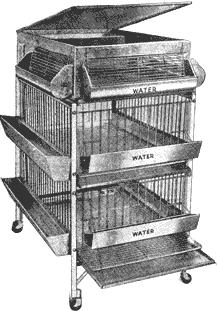

A complete chicken raising plant. With this broiler battery in your basement, garage or shed, and with no other equipment, you can raise baby chicks to 2 or 2 1/2 pound broilers in 8 to 10 weeks. Not more than 10 minutes a day care will give you 30 broilers a month at a feed cost of 16 cents a pound or less, depending on feed prices.